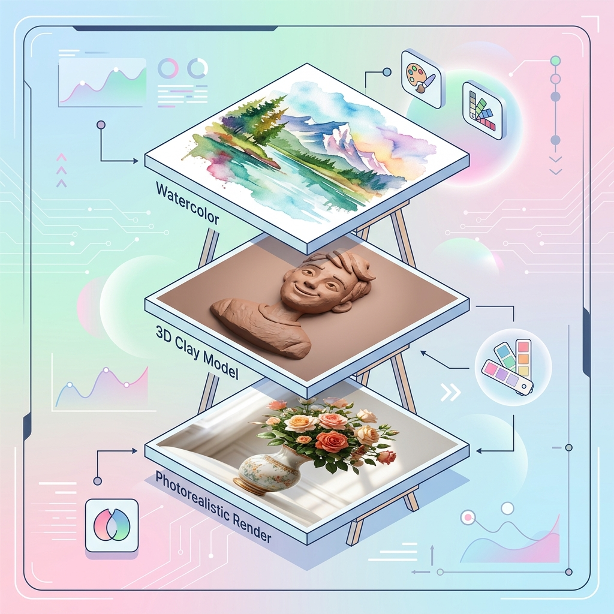
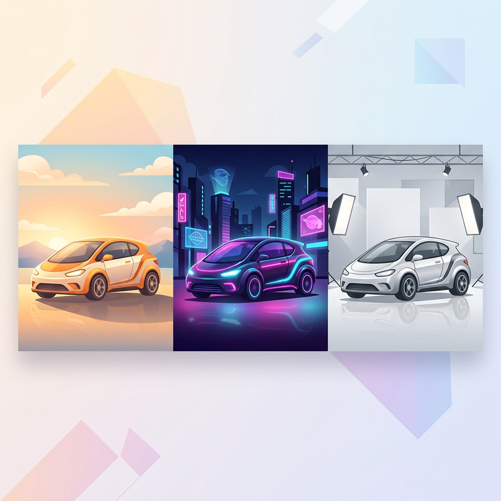
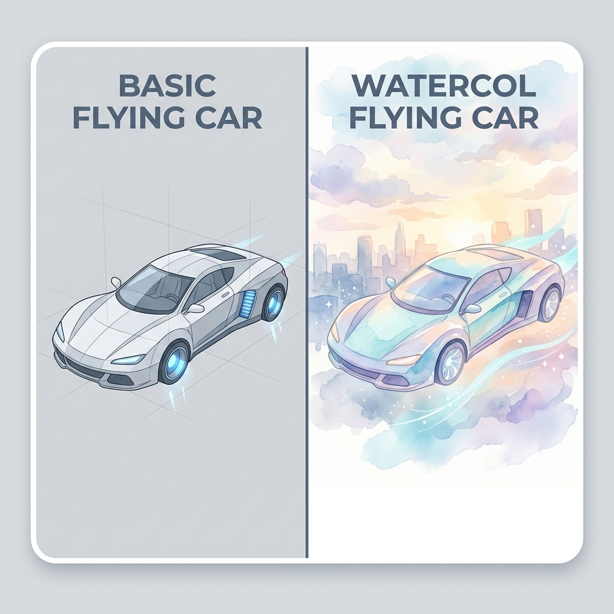
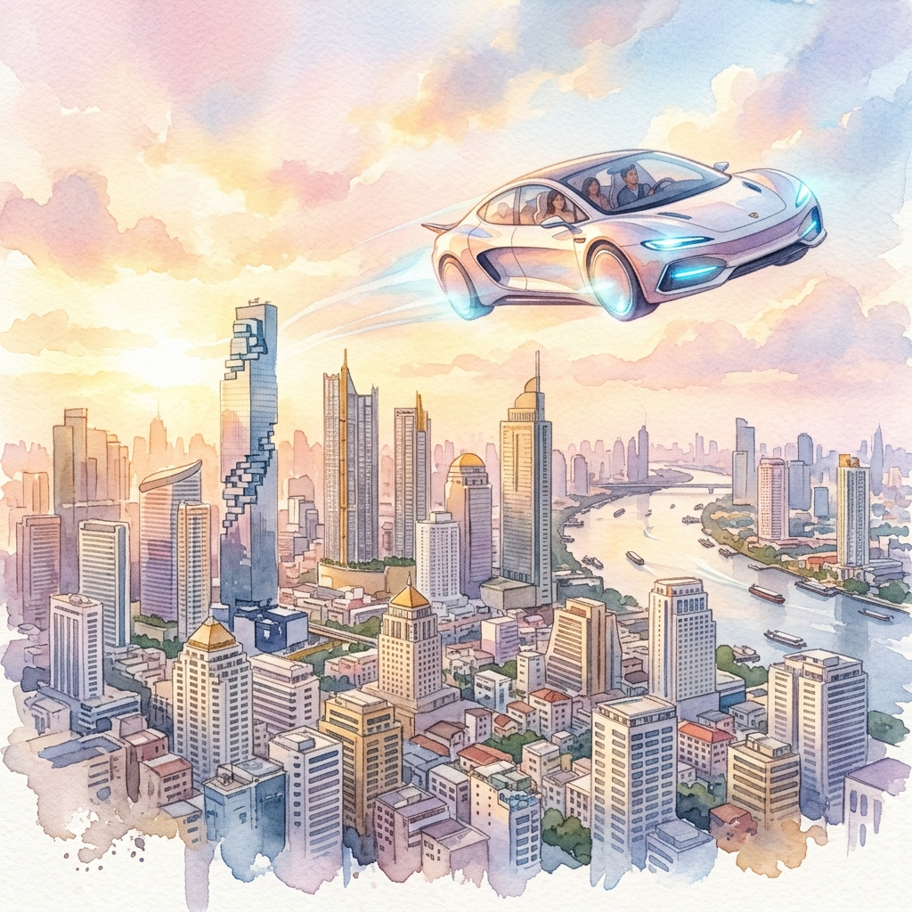
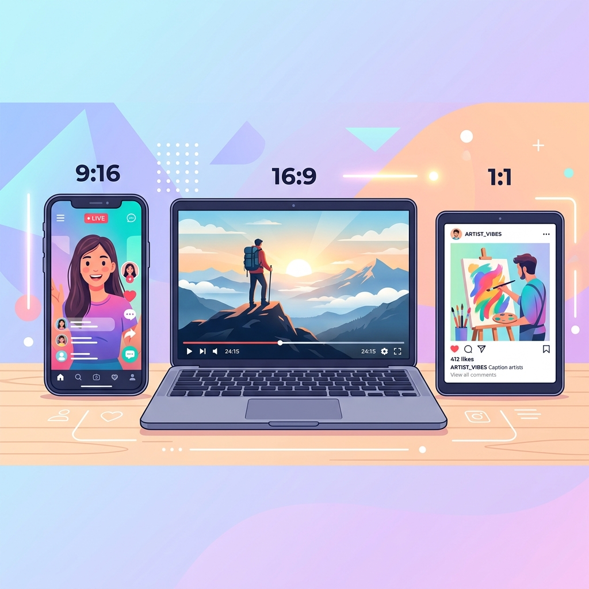
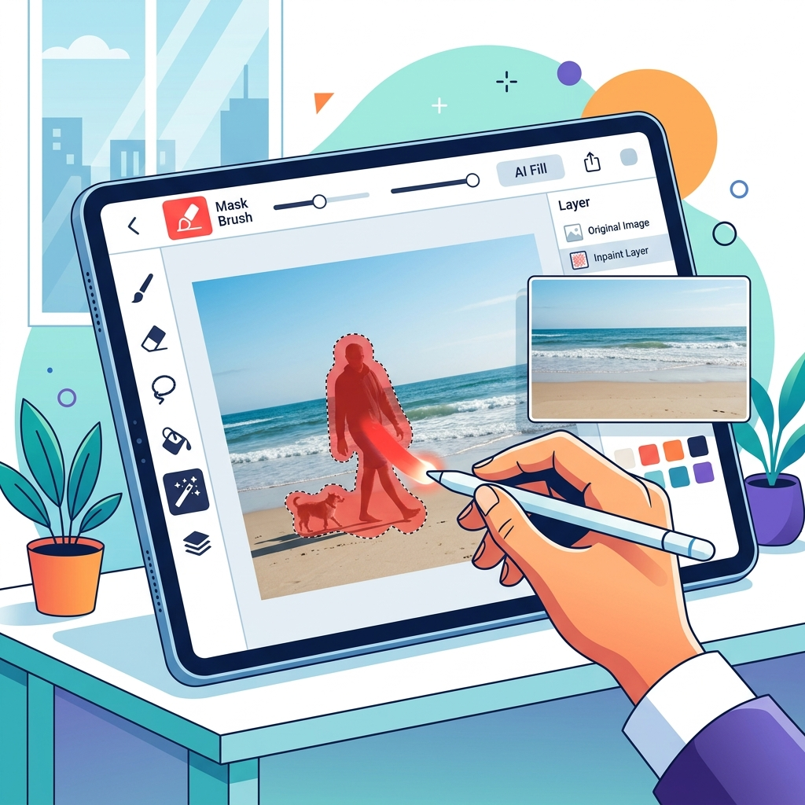
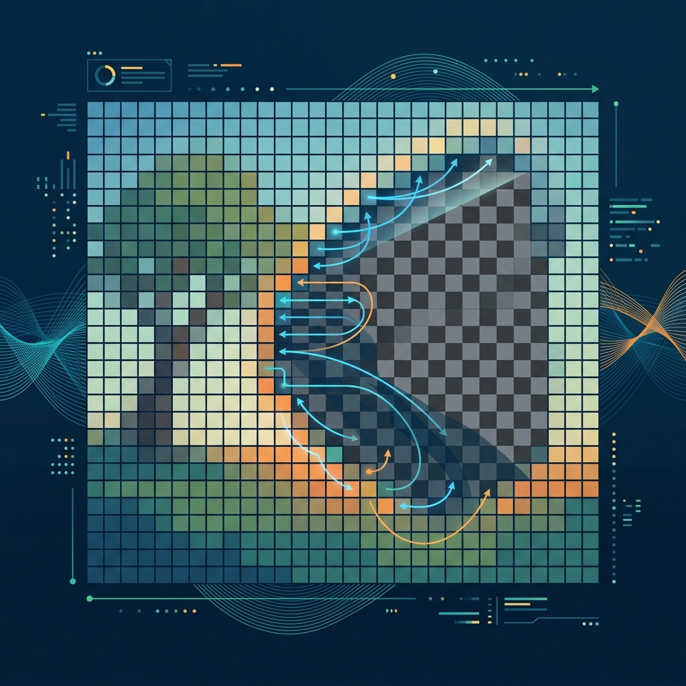
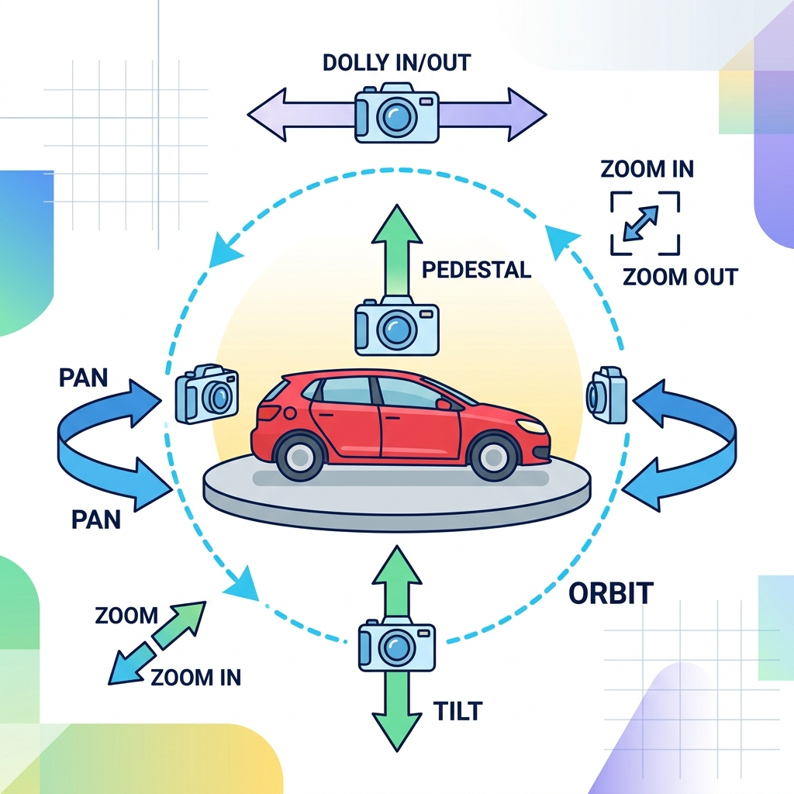
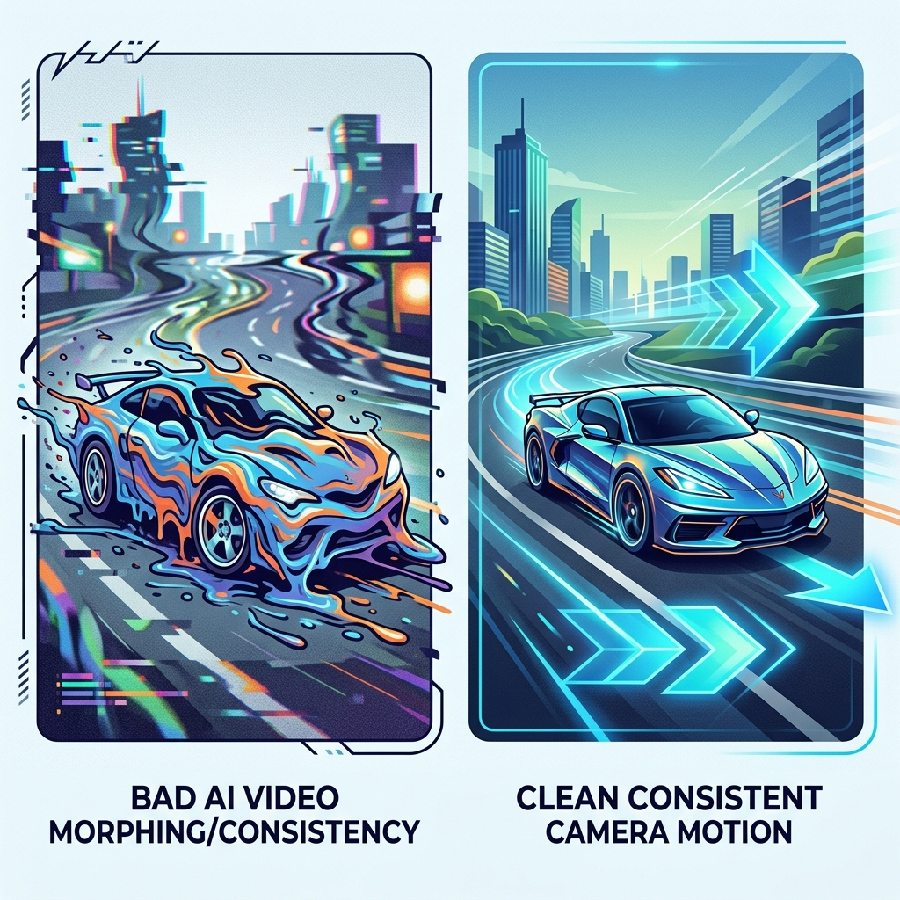

กรอกข้อมูลผู้เรียนด้านล่าง เพื่อเปิดใช้งานระบบและจับคู่โจทย์แบบสุ่มอัตโนมัติประจำตัวเลขที่นั่งของนักเรียน
เรียนรู้เครื่องมือ Gemini และ OpenArt.ai อย่างสร้างสรรค์และมีจริยธรรม
หากเขียนพรอมต์คำสั่งแบบลอยๆ ผลลัพธ์ที่ได้จะพึ่งพาโชคชะตาและการเดาของ AI เป็นหลัก แกนเริ่มต้นในการสร้างสรรค์ภาพจึงประกอบด้วย:
ระบุคำสำคัญเช่น "3D render, Octane Render style, smooth surfaces" เพื่อเพิ่มมิติความสวยงามทันสมัย

เพื่อเติมมิติของภาพให้น่าสนใจและมีความรู้สึกสมจริง (Cinematic) จำเป็นต้องคุมแกนรายละเอียด แสงเงา และความสูงต่ำของเลนส์:
แสง (Lighting) คือตัวกำหนดอารมณ์ของชิ้นงาน การใส่ "cinematic lighting" หรือ "studio lighting" จะยกระดับภาพให้เป็นมืออาชีพ

มาดูความเปลี่ยนแปลงเมื่อเราป้อนคำสั่งสร้างภาพทีละสเต็ป ผ่าน "Gemini Banana" ( Imagen 3 ) เพื่อเปรียบเทียบความแตกต่างทางสายตาอย่างเห็นได้ชัด:
เมื่อระบุ "+Style" (ภาพระบายสีน้ำ) AI จะจำกัดวัสดุและวิธีการนำเสนองานศิลปะให้ชัดเจนและไม่เดาสุ่มสไตล์

เมื่อนำข้อจำกัดด้านฉากหลัง ทิศทางแสง และการวางมุมกล้องมารวมเข้าด้วยกัน ภาพจะออกมามีชีวิตชีวาและเล่าเรื่องได้ตรงความต้องการที่สุด:
"A watercolor illustration of a futuristic flying car soaring over Bangkok skyscrapers, soft morning sunlight, cinematic composition"
โมเดลสร้างภาพเข้าใจภาษาอังกฤษแม่นที่สุด คิดไม่ออกให้พิมพ์บอก Gemini Chat ช่วยแปลและเรียบเรียงพรอมต์ภาษาอังกฤษตามสูตรให้ก่อนได้!

ให้นักเรียนเปิดหน้าเว็บ Chatbot Gemini (gemini.google.com) แล้วทดลองป้อน Prompt วิวัฒนาการรูปภาพ "รถยนต์ไฟฟ้าบินได้แห่งอนาคต (Futuristic flying car)" ตาม Style จำลองของตนเอง
— (ระบุเลขที่นั่งก่อน)
วิวัฒนาการคำสั่ง "รถยนต์ไฟฟ้าบินได้" สไตล์ ... ด้วย Gemini
| สัดส่วน (Ratio) | ชื่อเรียกทั่วไป | ความเหมาะสมในการโฆษณา / งานสื่อสาร |
|---|---|---|
| 16:9 / 21:9 | Widescreen (แนวนอน) | ใช้ทำปกคลิป YouTube, หน้าสไลด์นำเสนอผลงาน, ป้ายบิลบอร์ดริมทางด่วน |
| 9:16 | Portrait (แนวตั้ง) | ใช้โฆษณาใน TikTok, IG/Facebook Stories, YouTube Shorts |
| 1:1 | Square (สี่เหลี่ยมจตุรัส) | ใช้ทำภาพโปรไฟล์โลโก้ร้าน, โพสต์รวมในไอจี, หน้าปกเพลง |
| 4:3 / 3:2 | Classic Frame (ปกติ) | ใช้สำหรับถ่ายรูปภาพบุคคลเชิงสารคดี โฆษณาพิมพ์นิตยสารกระดาษ |

ทำไมการเจาะจงสัดส่วนจึงสำคัญ? สัดส่วนและขนาดภาพที่ไม่ถูกต้องจะสร้างความน่าหงุดหงิด (Visual friction) แก่ผู้พบเห็นอย่างรุนแรง เช่น:
ในโลกโซเชียลมีเดียที่แข่งขันสูง หากผู้ใช้รู้สึกขัดตาแม้เพียงเสี้ยววินาที พวกเขาจะเลื่อนหนีคลิปนั้นและเปลี่ยนไปดูสื่ออื่นทันที
ให้นักเรียนสวมบทบาทเป็น ผู้ออกแบบสื่อโฆษณาระดับมืออาชีพ (Creative Designer) โดยเปิดโจทย์จำลองตามสถานการณ์ของชุดเลขที่นั่งของตนเอง แล้วประเมินทิศทางเชิงธุรกิจเพื่อป้อนสั่ง AI:
— (ระบุเลขที่นั่งในหน้า 2 ก่อนเพื่อดึงโจทย์สุ่ม)
ในโมเดลสร้างรูปภาพ เช่น OpenArt.ai เราสามารถคลิกเลือกปุ่ม Aspect Ratio ในเมนูได้เลย หรือใส่คีย์เวิร์ดต่อท้ายภาพ เช่น widescreen 16:9 format หรือ 9:16 aspect ratio เพื่อจำกัดกรอบงาน
วิเคราะห์แผนการสร้างสื่อสำหรับโจทย์: ...
Inpainting (การเติมเนื้อหาภาพใหม่): เทคนิคการระบายสีแปรงทับ (Brush Masking) บนวัตถุที่ต้องการเปลี่ยน เพื่อให้ AI ลบวัตถุเดิมออกแล้ววาดวัตถุชิ้นใหม่เข้าแทนที่อย่างสมจริง โดยไม่ต้องวาดใหม่ทั้งภาพ

เมื่อเราสั่ง Inpainting ตัวแบบจำลองภาพ (Image Generator Model) จะไม่เพียงแค่วาดภาพชิ้นใหม่มาตัดแปะเฉยๆ แต่มีกระบวนการคำนวณขั้นสูง:

ดาวน์โหลดไฟล์ภาพถนนในกรุงเทพฯ ด้านล่างนี้ (หรือค้นภาพถนนอื่นๆ ใน Google Images ตามใจชอบ) จากนั้นอัปโหลดเข้าสู่เครื่องมือตัดต่อภาพ AI เพื่อแทนที่รถยนต์ในภาพ:
— (ระบุเลขที่นั่งก่อนเพื่อรับชื่อรถ)
เช่น Xiaomi SU7, BYD Dolphin, Wuling Mini EV, Zeekr 009, BYD Atto 3เปลี่ยนรถในภาพเป็นรถยนต์ไฟฟ้ารุ่น ...
เพื่อเปลี่ยนภาพนิ่งที่เราเจนเสร็จให้กลายเป็นวิดีโอสั้นขนาด 3-5 วินาทีในโปรแกรมสร้างวิดีโอ (เช่น labs.gemini หรือ openart video) เราใช้พรอมต์ในการบังคับทิศทางกล้อง:
pan left หรือแพนขวา pan rightzoom in หรือดึงถอยออก zoom outtilt down หรือเงยขึ้นท้องฟ้า tilt upcamera orbit shot rotating
การสร้างภาพเคลื่อนไหวที่เนียนตาและดูสมจริง มีทฤษฎีหลัก 2 ข้อที่ต้องให้ความสำคัญ:
subtle wind breeze, soft smoke driftingห้ามสั่งทิศทางการเคลื่อนไหวของวัตถุจนเกินความเป็นจริงในฟิสิกส์ เพื่อป้องกันไม่ให้โครงสร้างรถยนต์/ตึก แตกพิกเซลหรือเบลอตัวลง

นำรูปภาพรถยนต์ไฟฟ้าจีนที่ตัดต่อเสร็จจากกิจกรรมที่ 3 (หรือรูปที่เจนขึ้นใหม่) เข้าสู่เครื่องมือทำวิดีโอ (labs.gemini หรือ openart video) แล้วสั่งโมชันมุมกล้องตามทิศทางที่กลุ่มของคุณได้รับสุ่ม
— (ระบุเลขที่นั่งก่อน)
ปั้นความเคลื่อนไหวให้กับภาพถ่ายด้วยทิศทางมุมกล้อง: ...
ให้นักเรียนประยุกต์ใช้ทักษะการสร้างและดัดแปลงรูปภาพ/วิดีโอด้วย AI ทั้งหมดที่เรียนมา เพื่อออกแบบชุดสื่อโฆษณาผลิตภัณฑ์ไทยในแบรนด์และแนวคิดใหม่ของตนเอง:
ลิขสิทธิ์รูปภาพตั้งต้น (Copyright): การดึงภาพถนนจาก Google Search มาดัดแปลงแก้ไข (Inpainting) เพื่อส่งเป็นการศึกษาในห้องเรียนไม่มีปัญหา แต่หากจะดัดแปลงเพื่อนำไปขายเชิงการค้า ต้องมั่นใจว่ารูปต้นแบบเป็นสัญญาอนุญาตประเภท Creative Commons CC0, Public Domain หรือภาพที่เราถ่ายมาด้วยตนเอง
ภาพปลอม/ข่าวปลอม (Deepfakes & Misinformation): การลบแบรนด์รถหรือใส่เหตุการณ์ปลอมบนท้องถนนไทย สามารถชี้นำความคิดคนเข้าใจผิดได้ ครูจึงต้องย้ำเรื่องห้ามทำภาพหลอกลวงสังคม หรือจงใจสร้างความปั่นป่วนบิดเบือนความจริง
การระบุอย่างเปิดเผยว่าภาพนี้ดัดแปลงด้วยระบบปัญญาประดิษฐ์ (AI-generated) ถือเป็นมารยาททางวิชาการและการสื่อสารในปัจจุบัน เพื่อความโปร่งใสและแสดงความจริงใจต่อผู้บริโภคสื่อ
หากนำชิ้นงานสร้างสรรค์ไปเผยแพร่ ควรระบุชัดเจน เช่น "ภาพนี้สร้างสรรค์ด้วยปัญญาประดิษฐ์" เพื่อสร้างนิสัยการอ้างอิงแหล่งที่มาที่น่าเชื่อถือ
อย่าทำการแก้ไขภาพใบหน้าของบุคคล หรือป้ายทะเบียนรถส่วนบุคคลของผู้อื่นโดยไม่ได้รับอนุญาต เนื่องจากกฎหมายพระราชบัญญัติคุ้มครองข้อมูลส่วนบุคคล (PDPA) และสิทธิ์ความเป็นส่วนตัวของผู้อื่น
✏️ 1. การเลือกสัดส่วนภาพ (Aspect Ratio) และสไตล์ศิลปะให้เข้ากับเป้าหมายโจทย์จำลองในคาบนี้ (โจทย์ข้อ 2) มีความสำคัญต่อความน่าเชื่อถือและการมองเห็นโฆษณาอย่างไร?
✏️ 2. ในมุมมองของจริยธรรมลิขสิทธิ์และการใช้งานเชิงการค้า การนำภาพจาก Google Images มาดัดแปลงแก้ไขเป็นภาพอื่นผ่าน Inpainting มีสิ่งใดที่เราต้องระมัดระวังเป็นพิเศษก่อนการเผยแพร่?
🚨 อย่าลืมกรอก “ชื่อ–นามสกุล” ในสไลด์ที่ 2 ให้ครบ จึงจะบันทึกเป็น PDF ได้